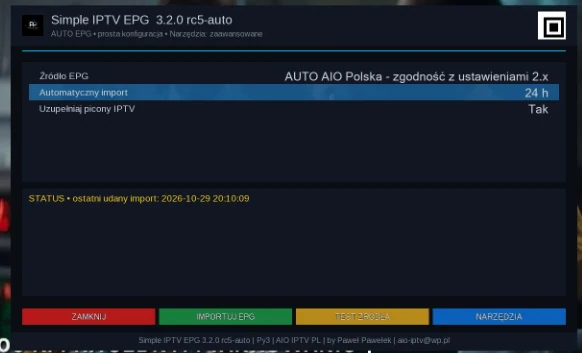
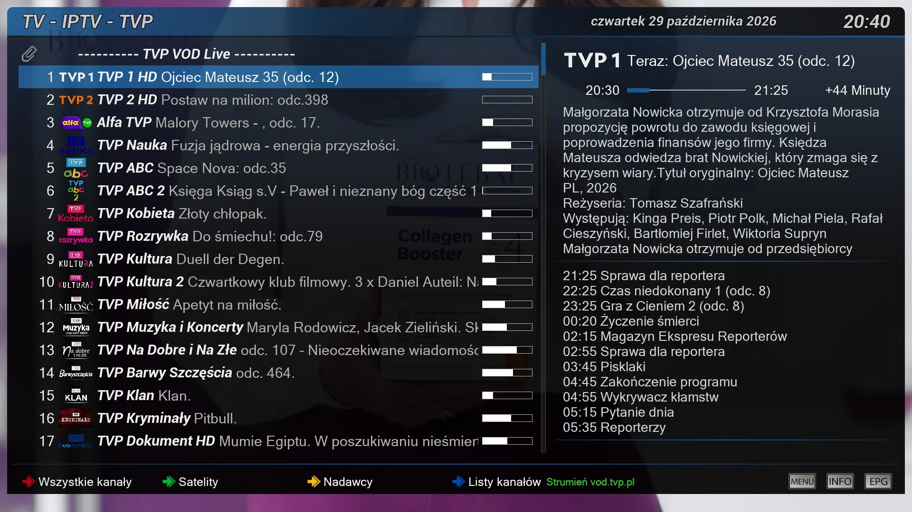
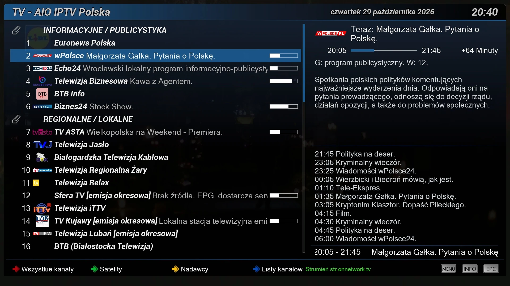
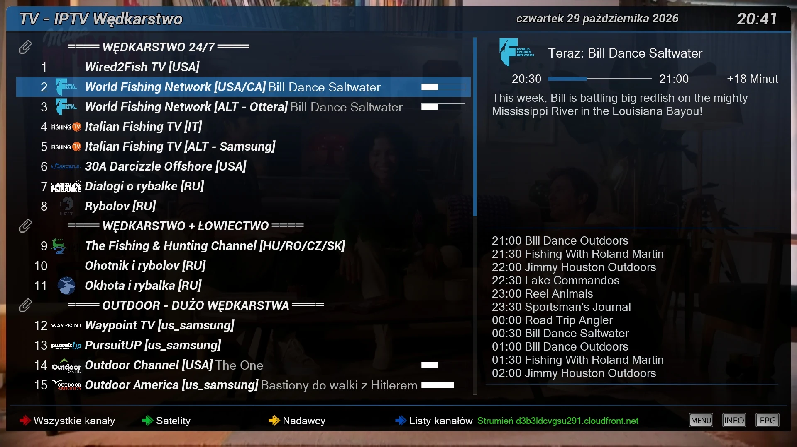
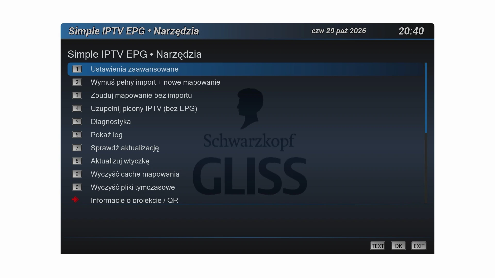

Projekt Paweł Pawełek | AIO Team
29 października 2026 • Enigma2 • Python 2 / Python 3
Simple IPTV EPG 3.2.0 RC5 AUTO
Najnowsza wersja upraszcza korzystanie z EPG dla IPTV: automatycznie dobiera źródła XMLTV, dokładniej mapuje kanały, uzupełnia brakujące picony i pozwala wykonywać import w tle.

Aktualne wydanie
Wersja: 3.2.0 RC5 AUTO
Wydano: 29.10.2026
Platforma: Enigma2 (Python 2 / Python 3; zgodność zależy od image)
Plik: enigma2-plugin-extensions-simpleiptvepg_3.2.0-rc5-auto_all.ipk
Rozmiar: 82.3 KB
SHA-256: 7da50cb73f2292df84ad0d38ac85dab11e3252d7fae64929f0d3d2b5c1eaba9a
Autor: Paweł Pawełek | AIO Team
Zalecane ustawienia po instalacji
- Źródło: AUTO AIO Polska
- Automatyczny import: co 24 godziny
- Uzupełnianie piconów IPTV: Tak
Pierwszy import: Narzędzia → Wymuś pełny import + nowe mapowanie.
Co nowego w RC5 AUTO?
- Prosty ekran główny: trzy najważniejsze ustawienia; pozostałe opcje przeniesione do Narzędzi.
- EPG Autopilot: dodatkowe źródła XMLTV, także dla wybranych kanałów zagranicznych.
- Dokładniejsze mapowanie: ostrożne dopasowanie identyfikatorów i nazw kanałów IPTV.
- Źródła EPG: EPG.OVH, EPGShare, PolishTeam, IPTV-EPG.org oraz EPG.PW.
- Picony IPTV: automatyczne wyszukiwanie i uzupełnianie logotypów.
- Ochrona satelitarnego EPG: kopiowanie SAT → IPTV pozostaje domyślnie wyłączone.
- Diagnostyka: raporty importu, dopasowania i użyte źródła dostępne w Narzędziach.
Import EPG działa w tle
Po rozpoczęciu pobierania i mapowania możesz zamknąć okno wtyczki i normalnie korzystać z tunera. Pobieranie XMLTV, mapowanie i uzupełnianie piconów są kontynuowane w tle. Po zakończeniu możliwe jest powiadomienie.
Import trwa zwykle kilka minut, zależnie od liczby kanałów, wydajności tunera, łącza i dostępności źródeł. Nie restartuj wtedy tunera ani interfejsu Enigma2.
Zdjęcia z działania na tunerze
Rzeczywiste przykłady EPG i piconów: TVP, polskie kanały lokalne, kanały tematyczne oraz menu Narzędzia.




Instalacja i aktualizacja
Możesz zainstalować dostarczony IPK z katalogu /tmp albo skorzystać z instalatora projektu GitHub. Po instalacji może być potrzebny restart GUI.
wget -qO - https://raw.githubusercontent.com/OliOli2013/SimpleIPTV_EPG/main/installer.sh | /bin/shopkg install /tmp/enigma2-plugin-extensions-simpleiptvepg_3.2.0-rc5-auto_all.ipkNie każdy kanał IPTV ma wiarygodne EPG. Wynik zależy od treści źródeł XMLTV, nazw usług i konkretnego image Enigma2. Pokazane zdjęcia są przykładami działania, a nie gwarancją pokrycia wszystkich kanałów.